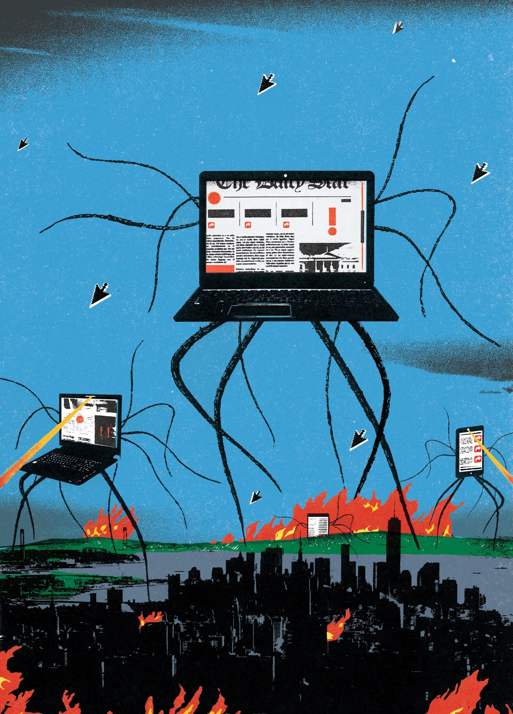

Old fights about radio have lessons for new fights about the Internet
By Adrian Chen

DEPT. OF TECHNOLOGY
CONVERSION VIA TWITTER
She was a prized daughter of the Westboro Baptist Church. Then she started to question her faith, one tweet at a time.
By Adrian Chen November 15, 2015
PROFILES
THE FEVER DREAM OF PRESIDENT OPRAH
Oprah Winfrey's work of earning such unprecedented secular authority—not at all unlike that of a politician—has involved gradually and tenaciously gaining her constituency's trust.